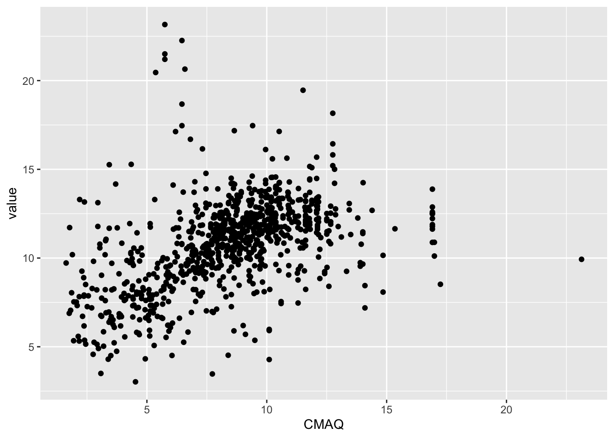
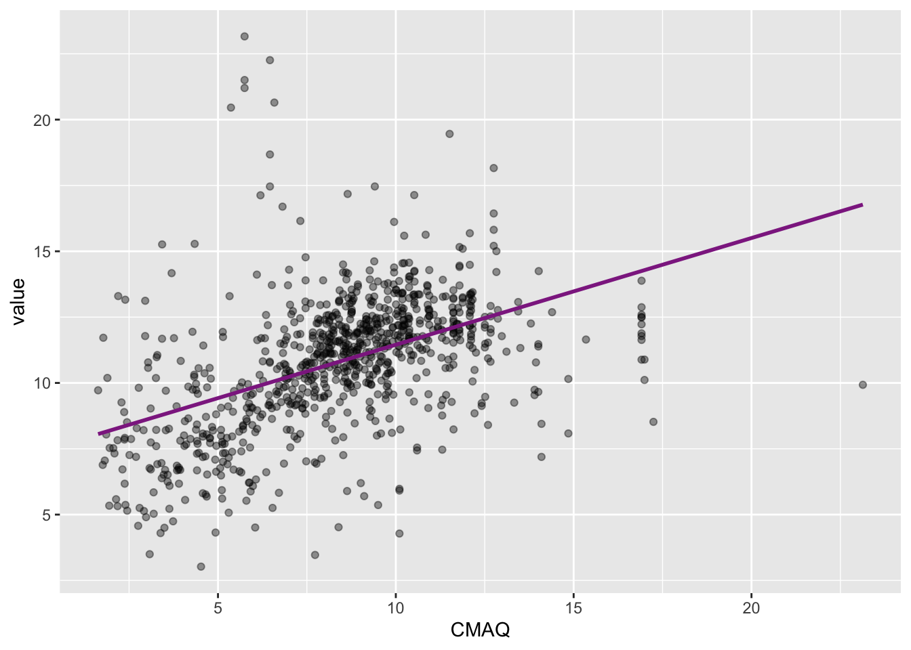
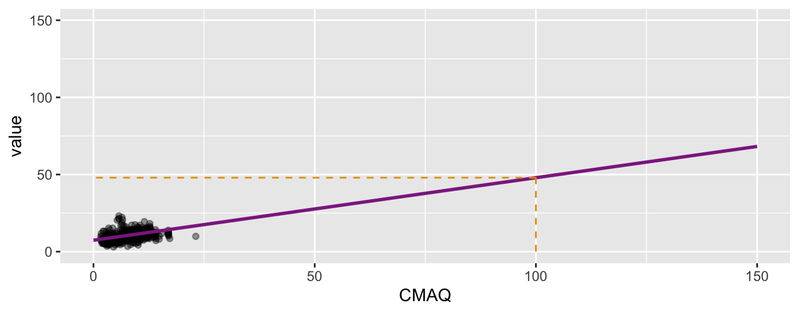
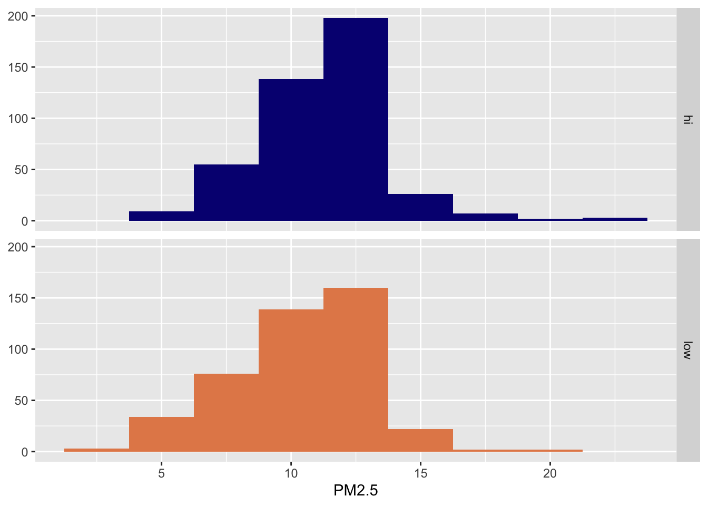
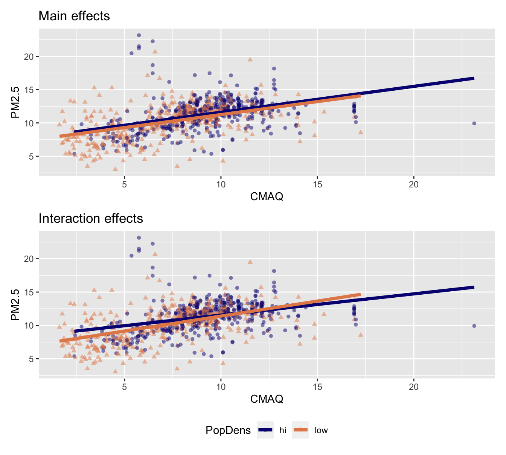
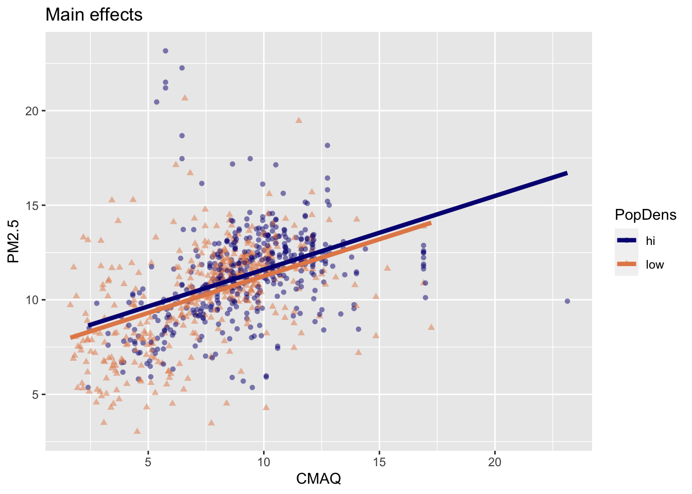
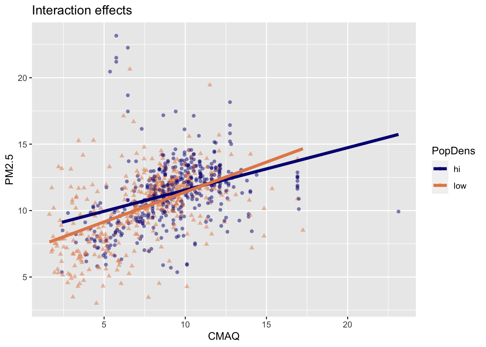

library(tidyverse)
library(tidymodels)
library(olsrr) # will need to be installed12-regression
Q&A
Q: kind of zoned out. When is it appropriate to use inference or machine learning?
A: We use inference when we want to quantify the relationship between features and outcome to understand relationships. We use machine learning when we want to make predictions on outcomes from features.
Q: I am confused why in EDA, we have been finding the correlation between variables that seem to be measuring the same thing (such as graphs for log distance to primary or primary and secondary road). Why are these helpful to us?
A: We are ultimately trying to build a model to predict PM2.5 values…but we have a lot of features from which to choose, many which measure very siimilar things. We’re using EDA to get a sense of what data we have and the relationships between variables, before ultimately deciding what to include in our ML model.
Course Announcements
Due Dates
- 🧪 Lab 06 due Thursday
- 📋 Lecture Participation survey “due” after class
Notes
- lab05 scores posted; cs01 scores/feedback posted by EOD
- lab07 now available | longer than typical labs
- Reminder to add any CS02 EDA you want to share with your classmates to the padlet from last class
Agenda
- Simple linear regression (review)
- Multiple linear regression
- Model Comparison
- Backward Selection
Suggested Reading
Linear Regression
Setup
Data
pm <- read_csv("OCS_data/data/raw/pm25_data.csv")Rows: 876 Columns: 50
── Column specification ────────────────────────────────────────────────────────
Delimiter: ","
chr (3): state, county, city
dbl (47): id, value, fips, lat, lon, CMAQ, zcta, zcta_area, zcta_pop, imp_a5...
ℹ Use `spec()` to retrieve the full column specification for this data.
ℹ Specify the column types or set `show_col_types = FALSE` to quiet this message.Starting Question
What is the relationship between the EPA’s CMAQ and PM2.5 values?
Reminder: Community Multiscale Air Quality (CMAQ) is the EPA’s air pollution model. The data do NOT use PM2.5 measures
Quick Look
ggplot(pm, aes(x=CMAQ, y=value)) +
geom_point()
Single predictor
Regression model
\[ \hat{y} = b_0 + b_1~x_1 \]
- \(\hat{y}\) | outcome
- \(x_1\) | predictor
- \(b_0\) | y-intercept
- \(b_1\) | slope (effect size)
Step 1: Specify model
linear_reg()Linear Regression Model Specification (regression)
Computational engine: lm Step 2: Set model fitting engine
lin_mod <- linear_reg() |>
set_engine("lm") # lm: linear modelStep 3: Fit model & estimate parameters
… using formula syntax
# fit model
mod_cmaq_value <- lin_mod |>
fit(value ~ CMAQ, data = pm)
# display results
mod_cmaq_value |>
tidy()# A tibble: 2 × 5
term estimate std.error statistic p.value
<chr> <dbl> <dbl> <dbl> <dbl>
1 (Intercept) 7.40 0.232 31.9 1.81e-148
2 CMAQ 0.405 0.0260 15.6 1.83e- 48. . .
\[\widehat{PM2.5}_{i} = 7.40 + 0.405 \times CMAQ_{i}\]
Visualizing the model
ggplot(data = pm, aes(x = CMAQ, y = value)) +
geom_point(alpha = 0.4) +
geom_smooth(method = "lm", fullrange = TRUE, color = "#8E2C90", se = FALSE)
Slope and intercept
\[\widehat{PM2.5}_{i} = 7.40 + 0.405 \times CMAQ_{i}\]
. . .
- Slope: For each one unit increase in CMAQ, we expect PM2.5 to increase, on average, by 0.405 ug/m^3.
. . .
- Intercept: Monitors in areas with a CMAQ of zero are expected to have PM2.5 values of 7.4 ug/m^3, on average. (Recall: WHO exposure guideline is < 10 ug/m^3 on average annually for PM2.5)
Model Understanding
\[\widehat{PM2.5}_{i} = 7.40 + 0.405 \times CMAQ_{i}\]
❓ What would we expect the PM2.5 value to be in an area with a CMAQ of 2?
❗️Prediction vs. extrapolation
❓ What would we expect the PM2.5 value to be in an area with a CMAQ of 100? \[\widehat{PM2.5}_{i} = 7.40 + 0.405 \times 100\]
. . .

Measuring the strength of the fit
The strength of the fit of a linear model is most commonly evaluated using \(R^2\).
It tells us what percent of variability in the response variable is explained by the model.
The remainder of the variability is explained by variables not included in the model.
\(R^2\) is sometimes called the coefficient of determination.
Obtaining \(R^2\) in R
glance(mod_cmaq_value)# A tibble: 1 × 12
r.squared adj.r.squared sigma statistic p.value df logLik AIC BIC
<dbl> <dbl> <dbl> <dbl> <dbl> <dbl> <dbl> <dbl> <dbl>
1 0.217 0.216 2.29 243. 1.83e-48 1 -1966. 3939. 3953.
# ℹ 3 more variables: deviance <dbl>, df.residual <int>, nobs <int>glance(mod_cmaq_value)$r.squared # extract R-squared[1] 0.2172969Roughly 21.7% of the variability in PM2.5 values can be explained by CMAQ.
. . .
…suggests that we can do better to explain the variance in PM2.5 values
Multiple predictors (MLR)
MLR
- Sample model that we use to estimate the population model:
\[ \hat{y} = b_0 + b_1~x_1 + b_2~x_2 + \cdots + b_k~x_k \]
Updated question
What is the relationship between CMAQ & population density (predictors) and and PM2.5 values (outcome)?
- Response variable:
value(PM2.5) - Explanatory variables:
CMAQand Population Density hi/low
Creating a low/high population density variable
pm <- pm |>
mutate(popdens = case_when(
popdens_zcta >= median(pm$popdens_zcta) ~ "hi",
popdens_zcta < median(pm$popdens_zcta) ~ "low"
))❓ What is this accomplishing?
PM2.5 & Poulation density

ggplot(data = pm, aes(x = value, fill = popdens)) +
geom_histogram(binwidth = 2.5) +
facet_grid(popdens ~ .) +
scale_fill_manual(values = c("#071381", "#E48957")) +
guides(fill = "none") +
labs(x = "PM2.5", y = NULL) Two ways to model
- Main effects: Assuming relationship between CMAQ and PM2.5 does not vary by whether it’s a low or high population density monitor.
- Interaction effects: Assuming relationship between CMAQ and PM2. varies by whether or not it’s a low or high population density monitor.
Interacting explanatory variables
- Including an interaction effect in the model allows for different slopes, i.e. nonparallel lines.
- This implies that the regression coefficient for an explanatory variable would change as another explanatory variable changes.
- This can be accomplished by adding an interaction variable: the product of two explanatory variables.
Two ways to model
- Main effects: Assuming relationship between CMAQ and PM2.5 does not vary by whether it’s a low or high population density monitor.
- Interaction effects: Assuming relationship between CMAQ and PM2. varies by whether or not it’s a low or high population density monitor.

. . .
❓ Which does your intuition/knowledge of the data suggest is more appropriate?
Put a green sticky if you think main; pink if you think interaction.
Fit model with main effects
pm_main_fit <- lin_mod |>
fit(value ~ CMAQ + popdens, data = pm)
pm_main_fit |> tidy()# A tibble: 3 × 5
term estimate std.error statistic p.value
<chr> <dbl> <dbl> <dbl> <dbl>
1 (Intercept) 7.70 0.272 28.3 1.02e-125
2 CMAQ 0.389 0.0270 14.4 1.89e- 42
3 popdenslow -0.345 0.160 -2.15 3.17e- 2. . .
\[\widehat{PM2.5} = 7.70 + 0.389 \times CMAQ - 0.345 \times popdens\]
. . .
❓ How do we interpret this model?
Solving the model
- High-population density: Plug in 0 for
popdens
\[\widehat{PM2.5} = 7.70 + 0.389 \times CMAQ - 0.345 \times 0\]
\(= 7.70 + 0.389 \times CMAQ\)
. . .
- Low-population density: Plug in 1 for
popdens
\[\widehat{PM2.5} = 7.70 + 0.389 \times CMAQ - 0.345 \times 1\]
\(= 7.355 + 0.389 \times CMAQ\)
Visualizing main effects
- Same slope: Rate of change in PM2.5 as CMAQ increases does not vary between low- and high-population density monitor areas.
- Different intercept: Areas of low density have consistently lower PM2.5 values relative to high-population density areas

Interpreting main effects
pm_main_fit |>
tidy() |>
mutate(exp_estimate = exp(estimate)) |>
select(term, estimate, exp_estimate)# A tibble: 3 × 3
term estimate exp_estimate
<chr> <dbl> <dbl>
1 (Intercept) 7.70 2217.
2 CMAQ 0.389 1.48
3 popdenslow -0.345 0.708- All else held constant, for each 1 unit increase in CMAQ, PM2.5 would expect to increase by 0.389.
- All else held constant, areas of low density have PM2.5 values, on average, that are 0.345 lower than in high density areas
- PM2.5 values in high-density areas with a CMAQ of zero, would expect to have a PM2.5 value of 7.7.
Interaction: CMAQ * popdens

Fit model with interaction effects
- Response variable:
value(PM2.5) - Explanatory variables:
CMAQ,popdens, and their interaction
pm_int_fit <- lin_mod |>
fit(value ~ CMAQ * popdens, data = pm)Linear model with interaction effects
# A tibble: 4 × 5
term estimate std.error statistic p.value
<chr> <dbl> <dbl> <dbl> <dbl>
1 (Intercept) 8.35 0.381 21.9 4.63e-85
2 CMAQ 0.319 0.0396 8.05 2.69e-15
3 popdenslow -1.45 0.485 -3.00 2.79e- 3
4 CMAQ:popdenslow 0.131 0.0540 2.42 1.56e- 2\[\widehat{PM2.5} = 8.35 + 0.32 \times CMAQ - 1.45 \times popdens + 0.13 \times CMAQ * popdens\]
Interpretation of interaction effects
- Rate of change in PM2.5 as CMAQ increases varies depending upon PopDens (different slopes & intercepts)
. . .

Comparing models
R-squared
- \(R^2\) is the percentage of variability in the response variable explained by the regression model.
glance(mod_cmaq_value)$r.squared #single predictor[1] 0.2172969glance(pm_main_fit)$r.squared[1] 0.2214237glance(pm_int_fit)$r.squared[1] 0.2266283. . .
- The model with interactions has a slightly higher \(R^2\).
. . .
- However using \(R^2\) for model selection in models with multiple explanatory variables is not a good idea as \(R^2\) increases when any variable is added to the model.
Adjusted R-squared
Adjusted R-squared adjusts for number of terms in the model
glance(pm_main_fit)$adj.r.squared[1] 0.21964glance(pm_int_fit)$adj.r.squared[1] 0.2239676It appears that adding the interaction actually increased adjusted \(R^2\), so we should indeed use the model with the interactions.
In pursuit of Occam’s razor
Occam’s Razor states that among competing hypotheses that predict equally well, the one with the fewest assumptions should be selected.
Model selection follows this principle.
We only want to add another variable to the model if the addition of that variable brings something valuable in terms of predictive power to the model.
In other words, we prefer the simplest best model, i.e. parsimonious model.
Backward selection
Backward selection
For this demo, we’ll ignore interaction effects…and just model main effects:
pm_full <- lin_mod |>
fit(value ~ ., data=pm) - \(R^2\) (full): 0.9125688
. . .
Remove zcta_area
pm_noarea <- lin_mod |>
fit(value ~ . -zcta_area, data=pm)
glance(pm_noarea)$adj.r.squared[1] 0.9134989. . .
- \(R^2\) (full): 0.9126
- \(R^2\) (no
zcta_area): 0.9135
…Increased improved variance explained, so remove variable
. . .
… continue to remove one by one until max variance explained is achieved. But, that process is tedious.
Other approach: olsrr
# requires package installation:
# install.packages("olsrr")
library(olsrr). . .
Step 1: Fit full model (w/o tidymodels)
Note: I’m only fitting a handful of variables to demo how it works. Theoretically, you would fit the full model and compare all combinations.
# fit the model (not using tidymodels)
mod <- lm(value ~ log_pri_length_25000 + log_prisec_length_15000 +
log_nei_2008_pm25_sum_15000 , data=pm). . .
Step 2: Determine which variables to remove
ols_step_backward_p(mod)
Elimination Summary
-------------------------------------------------------------------------------------
Variable Adj.
Step Removed R-Square R-Square C(p) AIC RMSE
-------------------------------------------------------------------------------------
1 log_pri_length_25000 0.1643 0.1624 2.3628 3998.1896 2.3638
-------------------------------------------------------------------------------------…specifies that log_pri_length_25000 should be removed
. . .
Step 2 (alternate): Compare all possible models…
ols_step_all_possible(mod) |>
arrange(desc(adjr)) Index N
1 4 2
2 7 3
3 5 2
4 1 1
5 2 1
6 6 2
7 3 1
Predictors
1 log_prisec_length_15000 log_nei_2008_pm25_sum_15000
2 log_pri_length_25000 log_prisec_length_15000 log_nei_2008_pm25_sum_15000
3 log_pri_length_25000 log_nei_2008_pm25_sum_15000
4 log_nei_2008_pm25_sum_15000
5 log_prisec_length_15000
6 log_pri_length_25000 log_prisec_length_15000
7 log_pri_length_25000
R-Square Adj. R-Square Mallow's Cp
1 0.16433852 0.16242406 2.362832
2 0.16468608 0.16181230 4.000000
3 0.13894927 0.13697665 28.867142
4 0.12833737 0.12734004 37.945112
5 0.12004781 0.11904100 46.598742
6 0.12047519 0.11846024 48.152590
7 0.06827606 0.06721001 100.644250On the full model
This will take a while to run:
mod_full <- lm(value ~ ., data=pm)
ols_step_backward_p(mod_full)
Elimination Summary
-----------------------------------------------------------------------------------------------
Variable Adj.
Step Removed R-Square R-Square C(p) AIC RMSE
-----------------------------------------------------------------------------------------------
1 zcta_area 0.9907 0.9135 -686.9999 2393.0696 0.7597
2 imp_a10000 0.9907 0.9144 -688.9885 2391.1777 0.7557
3 imp_a15000 0.9907 0.9153 -690.9804 2389.2532 0.7518
4 popdens 0.9907 0.9161 -692.9669 2387.3804 0.7479
5 lon 0.9907 0.917 -694.9512 2385.5282 0.7442
6 log_nei_2008_pm25_sum_25000 0.9907 0.9178 -696.9317 2383.7123 0.7405
7 log_pri_length_5000 0.9907 0.9186 -698.8475 2382.5047 0.7371
8 pov 0.9907 0.9193 -700.7333 2381.5780 0.7339
9 log_dist_to_prisec 0.9907 0.9199 -702.5666 2381.1422 0.7310
10 log_prisec_length_5000 0.9906 0.9205 -704.3919 2380.7786 0.7281
11 imp_a5000 0.9906 0.9212 -706.2355 2380.2407 0.7252
12 id 0.9906 0.9216 -707.8749 2381.6028 0.7231
13 log_prisec_length_1000 0.9906 0.922 -709.4443 2383.6011 0.7213
14 county_area 0.9905 0.9224 -710.9958 2385.7466 0.7196
15 popdens_county 0.9904 0.9226 -712.3595 2389.5945 0.7187
16 county_pop 0.9904 0.9226 -713.5295 2395.1638 0.7185
17 log_prisec_length_10000 0.9903 0.9226 -714.6346 2401.2525 0.7185
18 log_pri_length_10000 0.9902 0.9229 -716.1117 2403.9439 0.7172
19 log_pri_length_15000 0.9901 0.923 -717.4012 2408.2793 0.7166
-----------------------------------------------------------------------------------------------. . .
❓ How does this maybe inform our ultimate goal (building a prediction model)?
Recap
- Can you model and interpret linear models with multiple predictors?
- Can you explain the difference in a model with main effects vs. interaction effects?
- Can you compare different models and determine how to proceed?
- Can you carry out and explain backward selection?